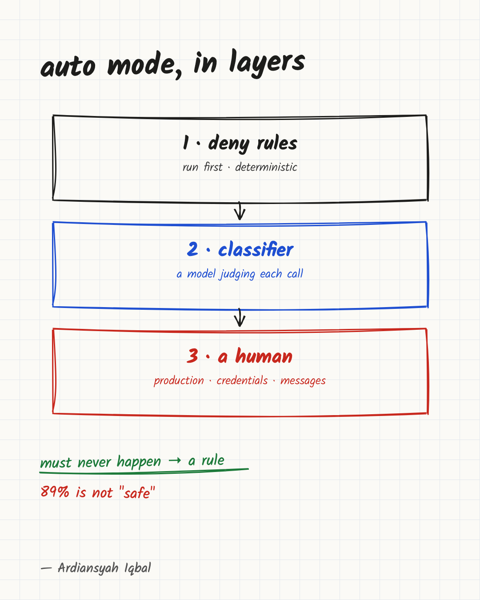

Next week Claude stops asking before it acts. Don't treat that as safety
Claude is replacing your approval click with a classifier; it beats tired humans, but it is not a security boundary.

For most of the short history of coding agents, the safety mechanism was a person pressing "approve." Next week that changes for a large group of users. Anthropic's update dated October 22 says auto mode is rolling out next week as the default for new sessions in most Claude apps on Pro, Max and Team plans. Claude Code made the same move for those plans earlier, with 9to5Mac reporting it from August 14.
The click is replaced by a classifier: a separate model check that looks at each tool call and decides whether it goes through. Anthropic's headline number for it is that it blocked 89% of dangerous prompts in a test, against 13.6% for human testers. That is a good result. It is also a result about one substituted prompt per session, so the other 11% tells you what the check let through in that test, not what it will let through in your repository.
I think auto mode is the right default for most people who use coding agents, and I think treating it as a security boundary is a mistake. This article explains what the check does, what the 89% measures, where the design leaves gaps, and which controls to keep outside the classifier's reach.
What the classifier checks, and in what order
According to Anthropic's description, auto mode routes each tool call through a classifier aimed at blocking actions that are irreversible or destructive. Safe calls proceed. When a call is blocked, Claude typically looks for another route or asks you for approval. In Claude Code, three consecutive blocks or twenty in one session send the session back to manual approval, so a stuck agent ends up in front of a person instead of looping.
The check looks at more than command names. It weighs whether data
counts as a secret and whether a git push or pull request
targets a public, private or trusted destination, and it looks at
repository state before destructive commands such as
git reset --hard. Data exfiltration is a hard deny inside
auto mode that is never approved, though a user can still run such an
action by switching out of auto mode or running the command themselves.
Admins can add custom deny rules. For prompt injection, external content
such as web pages, files and tool outputs is probed for hijacking
attempts, and a warning is added to Claude's context if one is
found.
The order matters, and it is the most useful detail on the page. Permission
rules still fire before the classifier. Your deny rules and your
allow rules run first. The one exception is allow rules broad enough to
permit arbitrary code execution, such as python:*. Auto
mode sets those aside while it is on, because they would let commands
skip the check. The settings files are not modified, and the rules apply
again when you leave auto mode.
So there are two layers with different guarantees. Rules are deterministic: a command either matches or it does not. The classifier is a model judging a situation. When you want a guarantee, you want a rule. When you want coverage of the cases you did not think of, you want the classifier. Mixing the two up is how teams end up depending on a probabilistic check for something that should have been a hard no.
What the 89% measures
The number comes from a study with paid testers hired through a research vendor for what was described as a coding study. They worked in a test environment, not their own codebases. They knew they were being evaluated but not which behavior was measured. Partway through each session, a single permission prompt was swapped for a clearly dangerous command, and the vendor recorded whether the tester approved it. Approving it never ran anything dangerous; only the prompt text changed.
The result: humans caught 13.6% of the dangerous prompts, and auto mode blocked 89%. The same page reports that humans blocked about 17% early in a session, dropping to about 5% after 50 or more earlier prompts, while auto mode's rate stayed flat.
That second finding is the stronger argument for the product. It is not that the classifier is brilliant. It is that approval prompts are a weak control once there are enough of them. The study shows testers catching far fewer dangerous prompts after 50 or more earlier ones; fatigue is the likely explanation, though the study does not show they stopped reading. A check that is consistently 89% effective beats a check that is 5% effective by the end of an afternoon, and the old default was the second kind.
Now the limits of the measurement, all from Anthropic's own page:
- The article never defines "dangerous" and does not list the commands used. It only says the prompts were "clearly dangerous."
- It is one swapped prompt per session. That tests whether the check recognizes an obviously bad command when it appears. It does not test a long chain of individually reasonable steps that ends somewhere bad, or varied real tasks with real consequences. That gap is why I call auto mode the right default for routine work, not a proven one for everything.
- The 11% is only the share of those test prompts that auto mode allowed. The study does not say those commands would have deleted anything; approving the swapped prompt never ran a dangerous command.
- The testers knew they were being studied, which could make them more careful or less natural than a developer in a real session. The page does not say which way.
The page does include a second comparison from real traffic: among flagged sessions from May to June 2026, at high severity, manually approved sessions contained more harmful actions the user had not explicitly asked for than auto mode sessions did. The sessions came only from accounts that had opted in to data use. A model graded each session. The page gives no sample sizes, no validation of that grader and no significance test. I would read it as a sign that the direction is probably right, not as a rate you can plan around.
Red-team figures need the same care. Anthropic reports that hardening lowered the classifier's miss rate against an external red team's attacks, and says that rate should not be taken as the miss rate on real traffic because the attacks were synthetic and adversarial by design. The practical reading is that no published figure is the miss rate for your workload, so the only way to know is to watch what gets blocked and what gets through in your own sessions.
Where the design leaves gaps
Reading the mechanism, I see four places where I would not rely on the classifier alone. These are my reading of the design, not failures Anthropic reports.
Sequences of reasonable steps. A classifier that judges each tool call sees one call at a time, plus whatever context it is given. The Anthropic page does not say how much history it uses, and the customer article does not describe its inputs either. If the check scores calls individually, then a harmful result built from several harmless-looking calls is the case to worry about. Treat that as a risk to test, not a known flaw.
Actions that look ordinary but have a large blast radius. A command to apply infrastructure changes or to call a live API can look the same on a staging account and on production. The classifier can check git status and push destinations, as the page says. It cannot know that the credentials in your shell point at the account where an error is expensive unless that is visible in the call.
Messages to other people. Sending something to a colleague, a customer or a channel cannot be undone, and its harm depends on tone and content, not on a dangerous pattern. The customer article describes one company that configured auto mode not to approve actions that communicate with other people, such as Slack messages or emails. That is a deliberate choice to keep a human on exactly the category a destructive-command check is least suited to.
Injection that arrives through content the agent trusts. The page says external content is screened and a warning is added to Claude's context if a hijack attempt is found. Anthropic also cites a third-party injection test in which none of the attempts succeeded against the Claude models in auto mode. It adds that those results cover the underlying models and not full product safeguards, and that first-party browser extensions were not tested. A result for a specific test set and a specific version (Claude Code v2.1.205) is not a promise about the next page your agent reads.
None of this says the classifier is bad. It says its job is to catch obviously destructive actions better than a fatigued person, and that is a narrower job than "make unattended agents safe."
What customers keep outside the classifier
Anthropic's customer write-up is promotional, and the results in it are self-reported. The practices it describes are still useful, because they show where experienced teams drew lines:
- Nuro engineers deny the most dangerous commands, such as recursive deletes, outright in their settings, and the classifier works inside those limits. Their engineers also switch to interactive mode for work that affects other teams, such as reviewing pull requests.
- Gusto routes MCP traffic through a governed proxy with tool guards and prompt inspection. One of its engineers uses accept-edits mode with manual verification for production infrastructure work involving Terraform, AWS and live APIs, and says: "Ultimately, you're still responsible for what happens."
- Garner Health uses auto mode in most sessions inside a standardized plugin for its development workflow, and its engineer stresses telemetry and standard workflows.
- Some teams with core IP tuned the prompts injected into the classifier to be more or less permissive.
Anthropic's own page agrees: it still recommends reviewing Claude's actions yourself for high-stakes production infrastructure changes, and it states that classifiers cannot eliminate risk.
A setup to apply this week
This is a starting point. Adjust it to what your tools support, and check the current Claude Code settings documentation for exact syntax before copying anything.
- Write down what must never happen. Typically: recursive deletes outside the project, force pushes to shared branches, anything that drops or truncates data, anything that reads credential files. Turn each into a deny rule. Cost: an hour of thought and an occasional blocked command you have to run yourself. Do not skip an item because the classifier would probably catch it; a rule is the version that is certain.
- Remove broad allow rules. A rule like
python:*gets set aside in auto mode anyway, so it protects nothing there, and it comes back the moment someone switches to another mode. Narrow it to the commands you actually use. - Pin the default where it matters. Individuals can
switch modes with Shift+Tab in the CLI or the mode dropdown in the
desktop app. Admins can set
defaultModein managed settings to pin a default, or setdisableAutoModeto turn the feature off. Pinning costs you the convenience, which is the point for a production-facing machine. - Use manual mode for production, credentials and outbound messages. Anything that touches live infrastructure, shared secrets, or other people's inboxes and channels stays on approvals. If the approval fatigue finding worries you, the answer is fewer, better prompts for those few tasks, not auto mode.
- Keep a tripwire outside the agent. Run tests, linters and a diff review in CI, but only count it as a tripwire if the agent cannot change it: protect workflow files and test configuration with branch protection, code owners or a required human review, because in many repositories an agent can edit them. If the agent reports a task as done, the gate is the check it cannot touch, not the report.
- Log blocks. Anthropic's customer article says Gusto counts how many session transcripts include an auto mode denial. A block is information about what your agent keeps trying to do. Review them weekly for a few weeks; they tell you which deny rules to add and which prompts need tightening.
When not to do this: if your agent runs only in a disposable container with no credentials and no network access, most of this is overhead and plain auto mode is fine. The setup earns its cost where mistakes are expensive or irreversible.
The strongest counterargument is that more rules recreate the old problem. If every second command needs a human, people stop reading again, and the research on prompt fatigue suggests they will approve things they should not. That is why the list in step 1 should be short. Rules are for the few actions where a single failure is unacceptable. Everything else is what the classifier is for.
Take the click away, keep the rules
Auto mode is a reasonable trade. The old approval prompt gave a sense of control while its catch rate fell toward zero as sessions got longer, and a consistent check replaces it. For routine work in a repository, I would use it.
What I would not do is read 89% as "safe." It is a result from a single swapped prompt in a test environment, on a command set nobody has published. Hold it as one layer: deny rules for what must not happen, a classifier for the unexpected, a person for production and for anyone else's inbox.
Teams and individuals who let agents run for long stretches should do the setup above before the default changes under them. If you are a solo developer working on a side project, you can skip most of it.